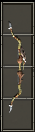

| 中文名称 | 套装奖励 | 组件名称 | 组件种类 | 组件属性 | 需要力量 | 需要敏捷 | 需要智力 | 需要等级 | 英文名称 |
| 奥杜 |
2 件奖励： 2% 物理伤害抗性 35% 穿刺抵抗 +5% 攻击速度 +25% 加快投射速度 全套奖励： 5% 物理伤害抗性 35% 穿刺抵抗 +10% 攻击速度 +3% 机率躲避投射物 +75% 加快投射速度 |
奥杜护手 (装备后人物 左手处长) |
臂(战) |
342 护甲 5% 物理伤害抗性 45% 穿刺抵抗 +125 点防御能力 +7% 机率躲避投射物 套装：奥杜 组件之一 |
493 | 0 | 0 | 37 | The Ordu |
|
奥杜的复合弓  (有类似扳机 在动的效果) |
弓 |
149 ~ 167 伤害 25% 穿刺 速度：0.05（基础攻速：68%） 35 降低护甲 持续 3.0 秒 +25 敏捷 +15% 攻击速度 +25% 加快投射速度 赋予技能 :齐射 等级：1 100% 几率在攻击时启动 使用弓快速且连续发射三次的战斗技术 技能类别：攻击、武器、攻击触发 有效武器：弓 5% 机率被使用 装载 3 个 套装：奥杜 组件之一 |
139 | 383 | 0 | 37 | The Ordu | ||
奥杜指环 |
戒指 |
15 降低护甲 持续 3.0 秒 +25 敏捷 +100 生命 +5% 攻击速度 +55 点战斗能力 套装：奥杜 组件之一 |
0 | 0 | 0 | 35 | The Ordu |
|